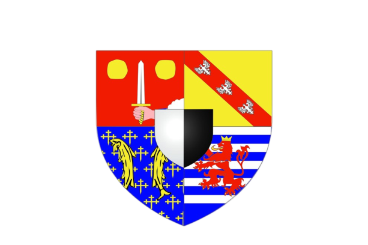

Préserver
Respecter
Protéger
Colorado du Pays de Bitche
Château du Schlossberg
Carrière du Barrois
Parc Animalier de Sainte-Croix
Zoo d'Amnéville
Citadelle de Bitche
Musée du carreau Wendel
Place Stanislas
Cathédrale Saint-Etienne de Metz